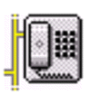

|  Download Speak Freely |
The Listening Post streams audio to your computer using GSM 6.10 compression. You will need an application that knows how to uncompress the audio stream and play it through your computer's sound system. So far, the only application that works with the current setup is Speak Freely. Speak Freely is an easy GSM 6.10 program to install and use. The Speak Freely web sites have a lot of valuable information: visit either Speak Freely for Windows or Speak Freely for Unix. However, if you only want to download the software, try here. Speak Freely is also a great way to do free voice communications over the internet, unfortunately, it is not available for the Macintosh; it is only available for Windows and Unix users.
We gave up hope for support from the DirectAudio Player on the Macintosh. It uses TCP for GSM 6.10 and Speak Freely uses UDP. I still hope to find other GSM 6.10 sound applications that will decode the audio stream. Lots more information on GSM 6.10 can be found at the TU Berlin Deptartment of Computer Science GSM-related web site or John Scourias' GSM site.
There is a program that will stream GSM 6.10 audio to any browser that supports Java. The software is called Vosaic RadioStudio. Vosaic cannot be used with Speak Freely, so we installed and tested Vosaic RadioStudio on our server. (The Vosaic company deserves thanks for supplying us with a free copy of their server software.) At the moment we have stopped using it. It requires a dedicated computer and we ran out of computer. It also did not perform as well as we had hoped. Probaby, we just need more experience with using it. For more information, check out the Vosaic home page at http://www.vosaic.com.
If you have expertise in Java or audio streaming and want to offer suggestions, drop us a line. Thanks.
Return to the Listening Post
Email for Andrew Mitz: arm@helix.nih.gov
Last updated 28 June 1999